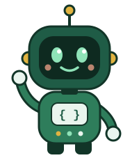

Semántica a prueba · U2 a U6
Lenguajes inventados
Kuarahy, Jasy y Ñe’ẽ no existen. Justamente por eso sirven: no puedes responder «por costumbre de Python». Lees las reglas, las aplicas y justificas qué regla decidió cada resultado.

Ada
En tu carrera vas a aprender muchos lenguajes leyendo su documentación, no en una clase. Este es el mismo ejercicio: reglas nuevas, código nuevo, y tú decides qué pasa.

Bug
Yo respondí «como en Python» y me equivoqué en todas. Las reglas del recuadro mandan, aunque te parezcan raras.
Puntos en este lenguaje: 0 de 0
¿Qué regla de la materia es cada regla inventada?
Si en el examen te cambian una regla, piensa a qué unidad pertenece: así sabes qué concepto nombrar en la justificación.
| Regla | Concepto | Unidad | Su contraria |
|---|---|---|---|
| Alcance dinámico (Kuarahy y Jasy, R1) | Ligadura de nombres, alcance, entorno | U3 | Alcance estático (Python, Java, C) |
| Paso por referencia (Kuarahy y Jasy, R2) | Mecanismos de paso, alias | U6 | Paso por valor; compartición de objetos en Python |
| Texto + número (Kuarahy y Jasy, R3) | Conversión implícita, tipado débil | U4 | Tipado fuerte: error de tipos |
| Sin precedencia (Ñe’ẽ, R1) | Precedencia y asociatividad | U5 | Precedencia habitual (* antes que +) |
| Evaluación completa (Ñe’ẽ, R2) | Evaluación en cortocircuito, guardas | U5 | Cortocircuito (Python, Java, C) |
| Valor-resultado (Ñe’ẽ, R3) | Mecanismos de paso | U6 | Paso por referencia; paso por valor |
| «¿La mantendrías?» (D3 en todos) | Criterios de diseño: legibilidad, escribibilidad, confiabilidad, regularidad | U2 | — |